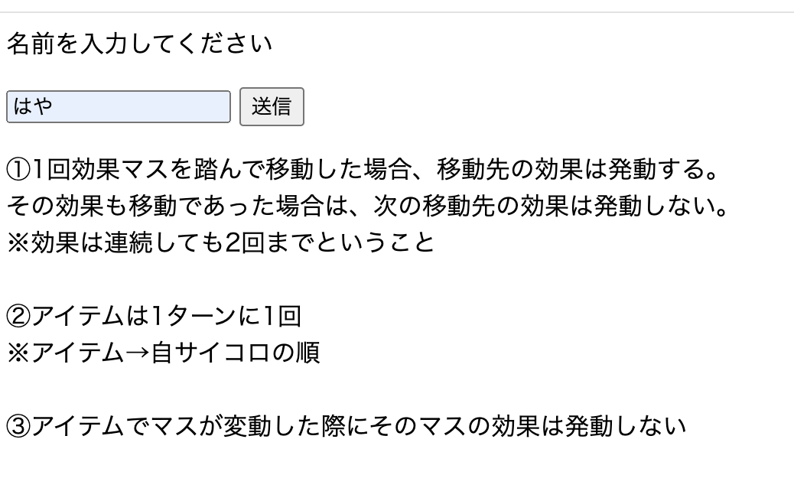

すごろく
【内容】
名前を入力したらすごろくのフィールド(64マス)が生成される。
62〜64マスは「10マス戻る」で固定になり、それ以外のマスはランダムに決まる。
CPを相手にサイコロを交互に振り、アイテムを駆使して先にゴールすれば勝ちというゲーム。
特別なルールは↓添付を参照。

【構成】
名前を入力して送信することで、
併せてactionというパラメータに「make」というvalueを付けてサーブレットに送信。
↓
ユーザーとCPのSugorokuUserインスタンスを生成。
すごろくのフィールドを生成するが、
このとき62〜64の3マスは「10マス戻る」に固定。
それ以外の61マスは確率でランダムに決まる。
ユーザー, CP, フィールドをセッションに登録し、
actionパラメータに「game」valueを付けてjspへ。
※40%:なにもなし 19%:アイテム獲得 1%:スタートに戻る
5% × 8:(1,2,3,4)マス(戻る,進む)
↓
ユーザーのターンから始まり、サイコロを振る。
actionパラメータに「game」valueを付けてサーブレットへ。
↓
進んだ先が効果マスでないなど※の場合、
プレイヤーとCPのターンフラグを変更し、
actionパラメータに「game」valueを付けてjspへ。
※1ターンの間に効果マスの3度目やアイテムマス2回目のとき
進んだ先が効果マスの場合は、
actionパラメータに「effect」valueを付けて再度サーブレットの処理。
↓
2周目以降はアイテムがあればアイテムを使える。
その場合はサイコロを振る前にアイテムを使用すると、
actionパラメータに「item」valueを付けてサーブレットへ送る。
↓
アイテムの処理をして、
actionパラメータに「game」valueを付けてjspへ。
アイテムは
・サイコロ2つ
・次の目が6になる
・位置交換
・相手のアイテムをランダムに1つ破壊する
・相手を6マス戻す
・どちらかが10マス戻る
・相手が1回休み
のラインナップ
↓
どちらかがゴールにたどり着くまで上記を繰り返す。
【工夫や学び】
userとcpをセッションで取得するとその都度、
if(userのターン) {
} else(cpのターン) {
}
と同じ処理を書いてしまっていた。
その冗長さをどうにかできないかと考えたところ、
userとcpの変数をさらにplayerとopponentという変数にいれれば
解決するのではないかと考えて実践した。
結果としてはうまくいって行数を減らすことができたし、
変更点があっても2箇所直す必要がなくなった。
これを読んでなにを当然のことを、とおもうかもしれないが、
私は変数に入れたものを再度変数に入れるということを無意識に避けていた気がする。
その発想を打破することができて成長を感じているし、
作成において他にもたくさんの工夫を凝らしたので、
時間があればソースコードの方をご覧いただきたい。